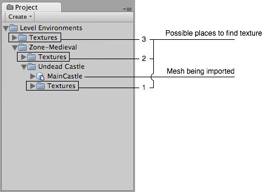

Meshes
Meshes make up a large part of your 3D worlds. Aside from some Asset store plugins, Unity does not include modelling tools. Unity does however have great interactivity with most 3D modelling packages. Unity supports triangulated or Quadrangulated polygon meshes. Nurbs, Nurms, Subdiv surfaces must be converted to polygons.

Textures
Unity will attempt to find the textures used by a mesh automatically on import by following a specific search plan. First, the importer will look for a sub-folder called Textures within the same folder as the mesh or in any parent folder. If this fails, an exhaustive search of all textures in the project will be carried out. Although slightly slower, the main disadvantage of the exhaustive search is that there could be two or more textures in the project with the same name. In this case, it is not guaranteed that the right one will be found.

Material tab of the Import Settings window
Material Generation and Assignment
For each imported material Unity will apply the following rules:-
If material generation is disabled (i.e. Import Materials is unchecked), then it will assign the Default-Diffuse material. If it is enabled then it will do the following:
- Unity will pick a name for the Unity material based on the Material Naming setting
- Unity will try to find an existing material with that name. The scope of the Material search is defined by the Material Search setting.
- If Unity succeeds in finding an existing material then it will use it for the imported scene, otherwise it will generate a new material
Colliders
Unity uses two main types of colliders: Mesh Colliders and Primitive Colliders. Mesh colliders are components that use imported mesh data and can be used for environment collision. When you enable Generate Colliders in the Import Settings, a Mesh collider is automatically added when the mesh is added to the Scene. It will be considered solid as far as the physics system is concerned.
If you are moving the object around (a car for example), you can not use Mesh colliders. Instead, you will have to use Primitive colliders. In this case you should disable the Generate Colliders setting.
Animations
You can import animations from a Model file. Follow the guidelines for exporting FBX files from your 3D modeling software before importing it into Unity.
Normal mapping and characters
If you have a character with a normal map that was generated from a high-polygon version of the model, you should import the game-quality version with a Smoothing angle of 180 degrees. This will prevent odd-looking seams in lighting due to tangent splitting. If the seams are still present with these settings, enable Split tangents across UV seams.
If you are converting a greyscale image into a normal map, you don't need to worry about this.
Blendshapes
Unity has support for BlendShapes (also called morph-targets or vertex level animation). Unity can import BlendShapes from .FBX (BlendShapes and controlling aninimation) and .dae (only BlendShapes) exported 3D files. Unity BlendShapes support vertex level animation on vertices, normals and tangents. Mesh can be affected by skin and BlendShapes at the same time. All meshes imported with BlendShapes will use SkinnedMeshRenderer (no mater if it does have skin or not). BlendShape animation is imported as part of regular animation - it simply animates BlendShape weights on SkinnedMeshRenderer.
There are two ways to import BlendShapes with normals:
- Set Normals import mode to Calculate, this way same logic will be used for calculating normals on a mesh and BlendShapes.
- Export smoothing groups information to the source file. This way, Unity will calculate normals from smoothing groups for mesh and BlendShapes.
If you want tangents on your BlendShapes then set Tangents import mode to Calculate.
Hints
- Merge your meshes together as much as possible. Make them share materials and textures. This has a huge performance benefit.
- If you need to set up your objects further in Unity (adding physics, scripts or other coolness), save yourself a world of pain and name your objects properly in your 3D application. Working with lots of pCube17 or Box42-like objects is not fun.
- Make your meshes be centered on the world origin in your 3D app. This will make them easier to place in Unity.
- If a mesh does not have vertex colors, Unity will automatically add an array of all-white vertex colors to the mesh the first time it is rendered.
The Unity Editor shows too many vertices or triangles (compared to what my 3D app says)
This is correct. What you are looking at is the number of vertices/triangles actually being sent to the GPU for rendering. In addition to the case where the material requires them to be sent twice, other things like hard-normals and non-contiguous UVs increase vertex/triangle counts significantly compared to what a modeling app tells you. Triangles need to be contiguous in both 3D and UV space to form a strip, so when you have UV seams, degenerate triangles have to be made to form strips - this bumps up the count.